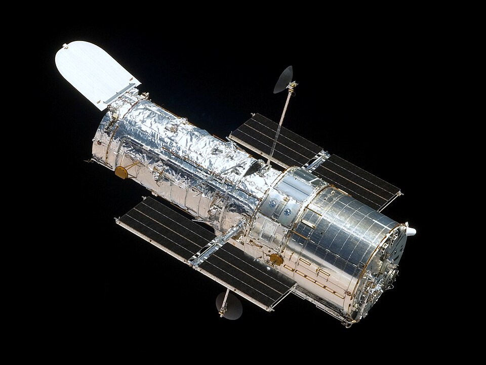

El Discovery lleva al espacio un telescopio para mirar el fondo del universo
El transbordador partió esta mañana con el telescopio espacial Hubble en su bodega, un cilindro del tamaño de un ómnibus que orbitará por encima de la atmósfera que empaña a todos los observatorios de la Tierra. Los astrónomos esperan ver galaxias a miles de millones de años luz, casi hasta el origen del tiempo.

A las 8.33 de la mañana, bajo un cielo despejado sobre la costa de Florida, el transbordador Discovery se desprendió de su rampa envuelto en fuego y trueno y puso rumbo a una de las órbitas más altas jamás buscadas por estas naves: unos seiscientos kilómetros sobre la Tierra. En su bodega viaja el pasajero que la astronomía espera desde hace una generación: el telescopio espacial Hubble, un cilindro plateado del tamaño de un ómnibus y de más de once toneladas, que mañana será depositado en el vacío con el brazo mecánico de la nave. Cinco tripulantes lo custodian; millones de ojos, desde tierra, lo acompañan.
El corazón del instrumento es un espejo de casi dos metros y medio de diámetro, pulido con una precisión que sus constructores ilustran con comparaciones de vértigo: agrandado al tamaño de un continente, su mayor aspereza no pasaría de unos centímetros. Libre de la atmósfera, que tiembla y empaña la vista de todos los observatorios terrestres, el telescopio verá el cosmos con una nitidez varias veces superior a la de los mejores espejos del suelo. Costó unos mil quinientos millones de dólares y debió aguardar años en depósito: estaba listo cuando la tragedia del Challenger, en 1986, suspendió los vuelos de los transbordadores.
El instrumento lleva el nombre de Edwin Hubble, el astrónomo norteamericano que en los años veinte demostró que las manchas lechosas del cielo profundo eran otras galaxias como la nuestra, y que todas se alejan unas de otras: la prueba de que el universo entero está en expansión, como si naciera de una explosión primordial. De aquella idea deriva la promesa que hoy despega: si la luz de las galaxias lejanas tarda miles de millones de años en llegarnos, un telescopio capaz de verlas estará viendo el pasado remoto del cosmos, acaso sus primeras edades. Los astrónomos hablan de mirar casi hasta el origen del tiempo.
En las tribunas del centro espacial se congregaron desde el alba millares de curiosos, y entre ellos, cuentan, no pocos astrónomos que trabajaron veinte años en el proyecto y confesaban los nervios de un padre primerizo. El despegue, aplazado dos semanas atrás por una falla de último minuto, salió esta vez sin un sobresalto, y en la sala de control hubo aplausos cuando la nave alcanzó la órbita con su carga intacta. La tripulación, al mando del comandante Loren Shriver, dedicará la jornada de mañana a la maniobra más delicada: soltar el telescopio, verificar que despliegue sus paneles solares y que abra su ojo.
Hay algo de acto de fe en poner un observatorio en el cielo: se gasta la fortuna de una guerra para responder preguntas que no dan de comer, y sin embargo ninguna pregunta parece más nuestra. Desde que un hombre alzó por primera vez un tubo con lentes hacia la noche, cada mejora del vidrio ensanchó el mundo. Ahora el vidrio sale del mundo. Si todo marcha, veremos galaxias cuya luz partió antes de que existiera la Tierra, y comprobaremos una vez más la paradoja que gobierna a la astronomía: cuanto más lejos miramos, más atrás en el tiempo vemos. El pasado del universo nos espera arriba.